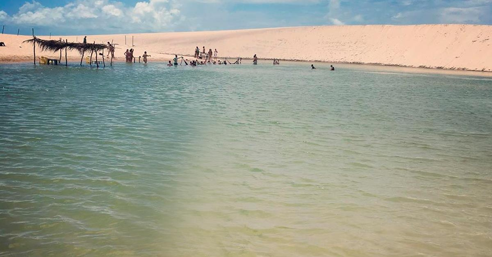
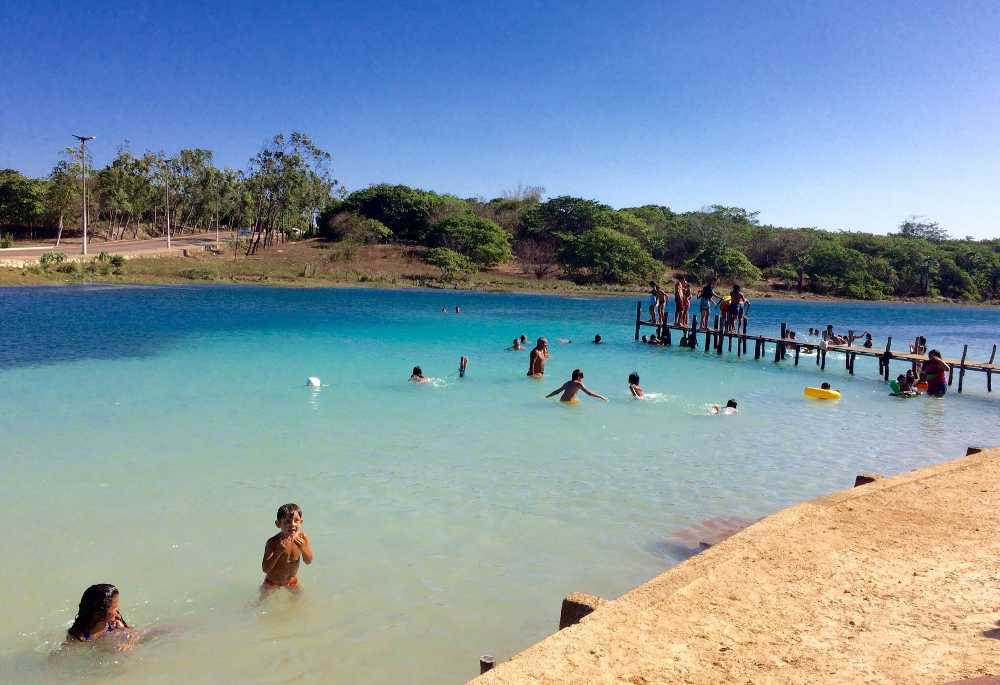
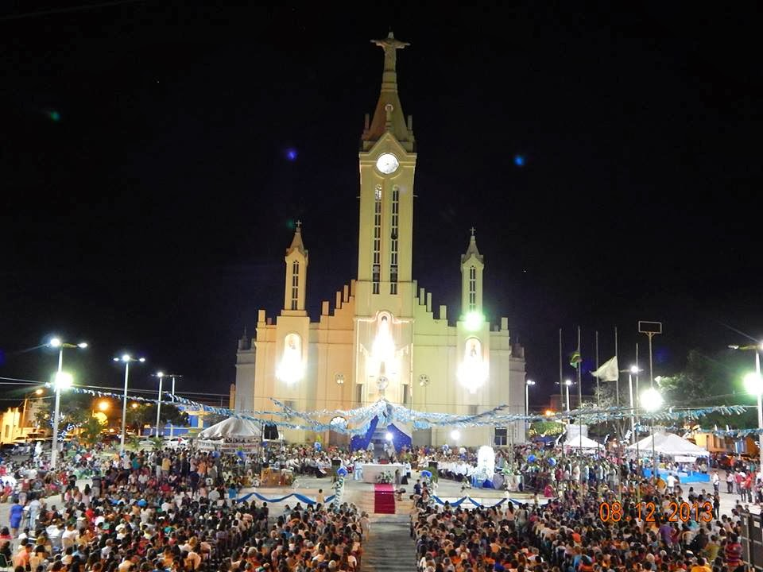

Informações técnicas sobre relevo, população, IDH etc.
| INFORMAÇÕES | |
|---|---|
| Municípios limítrofes | Cruz, Bela Cruz, Amontada, Morrinhos, Marco e Itarema |
| Fundação | 31 de julho de 1849 (171 anos) |
| Área total | 842,884 km² |
| Clima | Tropical atlântico |
| IDH | 0,601 — médio |
| PIB | R$ 309 490,000 mil |
| INFORMAÇÕES TERRITORIAIS | |
|---|---|
| Número de habitantes | 62 557 habitantes |
| Superfície de Acaraú |
84 288 hectares
842,88 km² (325,31 sq mi) |
| Densidade populacional | 74,2 hab./km² |
| Altitude de Acaraú | 7 metros de altitude |
| Coordenadas geográficas decimais |
Latitude:
-2.88968
Longitude: -40.1085 |
| Coordenadas geográficas sexagesimais | Latitude: 2° 53' 23'' Sul , Longitude: 40° 6' 31'' Oeste |
| INFORMAÇÕES DO MUNICÍPIO | |
|---|---|
| Endereço da Prefeitura Municipal de Acaraú |
Acaraú
Prefeitura de Acaraú
Rua Gal. Humberto Moura, 675 B ACARAÚ - CE, 62580-000 Brasil Work +55 88 3661-1092 Fax +55 88 3661-1092 |
| Telefone da prefeitura |
(88) 3661-1092
Internacional: +55 88 3661-1092 |
| Fax |
(88) 3661-1092
Internacional: +55 88 3661-1092 |
| Endereço electrónico da prefeitura |
Não disponível
|
| Site oficial do município | acarau.ce.gov.br |
| INFORMAÇÕES DO ADMINISTRATIVAS | ||
|---|---|---|
| Prefeito de Acaraú | ANA FLÁVIA RIBEIRO MONTEIRO | |
| Partido politico | PSB | |
| INFORMAÇÕES DE TRANSPORTE | |
|---|---|
| Transporte urbano disponível | Metropolitano |
| Aeroporto |
Aeroporto Internacional Pinto Martins
82.3 km
Aeroporto de Sobral
91.8 km
Aeroporto Internacional Prefeito Dr.João Silva Filho
180.5 km
|
| INFORMAÇÕES DE DISTÂNCIA A OUTRAS CIDADES | ||
|---|---|---|
| São Paulo : 2405 km | Rio de Janeiro : 2253 km | Brasília : 1671 km |
| Salvador : 1136 km | Belo Horizonte : 1930 km | Manaus : 2214 km |
| Curitiba : 2694 km | Recife : 816 km | Goiânia : 1832 km |
| Belém : 947 km | Porto Alegre : 3241 km | Guarulhos : 2384 km |
| Campinas : 2351 km | São Luís : 469 km | Fortaleza : 238 km mais perto |
| Distância calculada em linha reta! | ||
Conheça mais sobre a história de Acaraú.
Acaraú está situado na zona litorânea da Região Extremo Oeste do Estado do Ceará, com extensão territorial de 843,0 km² e localização geográfica privilegiada, com suas terras banhadas pelo mar e pelas águas perenes do Rio Acaraú. Partindo da capital, Fortaleza, o acesso é pela Rodovia Estruturante (CE 085) ou pela BR 222, com percurso aproximado de 238 km. Com cerca de 60 mil habitantes, Acaraú tem população flutuante sazonal devido à pesca e à irrigação no Perímetro Irrigado. Os principais ícones de sua economia são o coco, a castanha, a lagosta, o camarão e o peixe. A cidade passa por processo de modernização e crescimento econômico, alavancados pelo setor educacional, comércio e de serviços, pesca, agricultura, carcinicultura, parques eólicos e turismo - por estar próxima à região da Rota das Emoções, do Ministério do Turismo.
A história de ocupação do território do delta do rio Acaraú pelos índios tremembés8 começou antes da chegada dos portugueses à região, no século XVI. Os portugueses fizeram um reconhecimento completo da região, bem como a usaram como base de apoio para a ocupação do litoral e como base de apoio para confrontos militares com os franceses, que ocupavam o Maranhão.6 Deste momento histórico existem várias cartas topográficas datadas dos séculos XVII.
Em 1608, instala-se e fixa-se o primeiro povoamento português desta região que foi a "Aldeia do Cajueiro"9 (hoje Almofala), um aldeamento de índios criados por iniciativa dos Jesuítas. Já o início do povoamento e a implementação econômica às margens do Rio Acaraú pelos portugueses aconteceu com a chegada de fugitivos das guerras com os holandeses oriundos de Pernambuco,Paraíba e Rio Grande do Norte6 no século XVII; através das entradas dos Sertões de Fora; com a instalação da pecuária e a produção do charque na capitania do Ceará,no século XVIII.
O primitivo núcleo da Barra do Acaracu serviu de ancoradouro a pequenas embarcações e, depois, passou a chamar-se Porto dos Barcos de Acaracu. É o marco inicial do que, mais tarde, viria a ser a cidade de Acaraú. Antes do povoado da Barra do Acaracu, alguns quilômetros ao norte e também à margem direita do rio, que ficou conhecido como Presídio.6
No século XVIII, em 22 de setembro de 1799, o povoado foi elevado à categoria de distrito de Acaracu da vila de Sobral. Já sua elevação à categoria de vila do Acaracu, com o distrito já desmembrado da jurisdição de Sobral, ocorreu segundo Lei 480, de 31 de julho de 1849, tendo sido instalada a 5 de fevereiro de 1851. A fundação do município de Acaraú data de 31 de julho de 18496 . O título de município, já com a denominação atual de Acaraú, ocorreu segundo Lei 2 019, de 19 de setembro de 1882. A freguesia foi criada pelo decreto geral de 5 de setembro de 1832, com a transferência para a povoação da Barra do Acaraú da freguesia daIgreja de Nossa Senhora da Conceição de Almofala, antiga missão dos índios tremembés.
Saiba mais sobre os melhores lugares e o que fazer em Acaraú.
Largo do Poeta: Inaugurado no final do ano de 2008, como um presente de Natal para o povo de Acaraú e visitantes, pelo ex-prefeito Manoel Duca da Silveira Neto "Duquinha", no final de seu mandato. O Largo do Poeta, homenagem aos filhos ilustres do município de Acaraú, como Padre Antonio Tomas e o Poeta Nicodemos Araújo, entre outros.
Praia da Barrinha: O Conselho de Políticas e Gestão do Meio Ambiente- CONPAM certificou a Praia da Barrinha como uma das seis praias limpas do litoral cearense. A Certificação Praia Limpa é um incentivo para a conservação da beleza e dos ecossistemas das praias.O turista dispõe de serviços de restaurantes e bares, onde são servidos pratos típicos da região, incluindo peixes, crustáceos e frutos do mar. na estação chuvosa águas cristalinas se acumulam entre as dunas formando piscinas naturais ideias para o banho. Na estação chuvosa, águas cristalinas se acumulam entre as dunas formando piscinas naturais ideias para o banho .
Praia da Volta do rio: Volta do Rio é uma praia brasileira, localizada no município de Acaraú, Ceará, na divisa com Itarema. Distante em torno de 250 km de Fortaleza, Volta do Rio tem uma comunidade que vive da pesca artesanal. Nessa praia localiza-se também um dos maiores parques eólicos do Brasil, onde 28 aerogeradores funcionam ao longo de todo o ano. O parque eólico da localidade pertence a empresa internacional IMPSA.
Igreja matriz de Acaraú: A primeira igreja de Acaraú, consagrada como Nossa Senhora da Conceição, foi construída pelos próprios moradores da localidade. Era uma simples capelinha de taipa coberta de palha onde seriam realizados os atos de culto cristão. Antes da construção da capela os moradores pediram a presença do Padre Agostinho de Castro Moura, que morava no povoado de Almofala, para sugerir o melhor local da construção do templo. Segundo o livro “Município de Acaraú”, publicado em 1971, a capela foi levantada em 1749. O livro ressalta que na falta de documentos, as informações sobre a construção da primeira igreja de Acaraú foram colhidas de forma oral. Além disso, por ser um povoado situado em local ancoradouro à pequenas embarcações, que posteriormente se tornou porto, recebia um intenso fluxo de pessoas, o que contribuiu para a economia e um constante aumento dos moradores da Barra do Acaraú. Estes moradores necessitavam de um local onde os fiéis pudessem se reunir para o exercício da fé, dado o espírito religioso da época. A partir do século XIX a capela foi substituída por uma construção de alvenaria, dai em diante passou por sucessivas reformas. Em 1902, na gestão do Padre Sabino de Lima, a igreja antiga foi destruída para dar lugar ao templo atual. Os ornamentos arquitetônicos foram realizados no período de 1943 à 1947 sob a responsabilidade do arquiteto Agostino Baume Odísio. A Igreja Matriz mede 2.460 m² com área de cobertura de 1.150m². Sua torre central mede 45 metros, possui um enorme relógio de quatro mostradores e no alto pode-se ver uma bela escultura do Cristo de braços abertos. Seu carrilhão é composto por sete sinos, sendo que o maior deles pesa oitocentos quilos. No altar-mor a lâmpada do santíssimo é feita de prata e pesa cerca de 15 quilos.
Veja como chegar nos melhores pontos de Acaraú